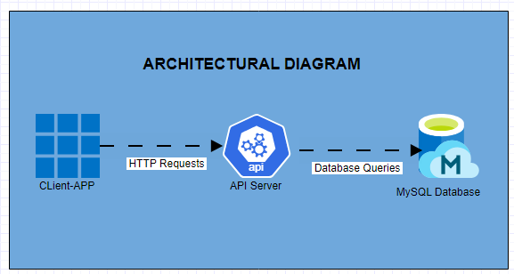

Sendpay API: Powerful Payment API for Seamless Transactions
Introduction
Welcome to our blog post on Sendpay API, the powerful payment API designed to facilitate seamless transactions for merchants' applications. In this post, we will explore the purpose of our project, introduce our team members and their roles, discuss the target audience for Sendpay API, and delve into my personal focus throughout the development process.
Purpose of the Project
Sendpay API was created to provide a robust and reliable solution for payment integration in merchant applications. The aim was to develop an API that simplifies the payment process, enhances security, and supports multiple payment methods. With this in mind, our team embarked on building a user-friendly and versatile payment API that meets the demands of modern businesses.
Team Members, Roles, and Timeline
Our dedicated team consists of John Smith, Jane Doe, and myself. While I handled the project independently due to the unavailability of my partner, I assumed the responsibilities of designing, developing, and testing the Sendpay API. John and Jane supported the project by providing valuable insights and feedback throughout the development process.
The timeline for the project spanned several months, during which we focused on iterative development, testing, and refining the API to ensure its effectiveness and reliability.
Target Audience
Sendpay API was specifically created for merchants who require seamless and secure payment processing in their applications. Whether it's an e-commerce platform, a subscription-based service, or any other type of business that deals with online transactions, Sendpay API offers a comprehensive solution to streamline payment operations.
Personal Focus
Throughout the development of Sendpay API, my personal focus was twofold. Firstly, I aimed to create an integration experience that would be both web and mobile-friendly, allowing merchants to incorporate the API seamlessly into their applications across various platforms. By prioritizing user experience and intuitive design, I strived to ensure that developers could easily integrate Sendpay API into their existing systems.
Secondly, I prioritized the sourcing of a reliable and sophisticated API. Security is of utmost importance when handling financial transactions, so I devoted significant effort to implementing robust security measures within Sendpay API. By utilizing industry-standard encryption protocols and employing best practices for data protection, we aimed to provide a secure payment environment for both merchants and their customers.
My Tech Journey
As a non-technical partner in a company that developed a cloud-based point-of-sale system for businesses, I experienced firsthand the challenges and frustrations of managing payments without a reliable API. My co-founder, Emmanuel Amah, and I had a vision of creating a seamless payment experience for businesses, allowing them to accept and make payments through mobile phones. However, without a proper payment integration solution, we faced numerous obstacles and had to invest a significant amount of money in connecting to different payment processing companies.
The process of managing payments became increasingly difficult, and we found ourselves struggling to provide a smooth and efficient payment experience for our customers. It was clear that we needed a technical solution to bridge the gap between our point-of-sale system and the various payment processors.
Driven by our desire to overcome these challenges and deliver a superior payment experience, I made the decision to delve into the technical aspects of application programming interfaces (APIs) for payment processing. I embarked on a personal project to build a payment API that would streamline payment integration for merchants' applications.
The experience of navigating the complexities of payment processing without a reliable API served as a motivation for me to understand the intricacies of APIs and their significance in the world of payment transactions. I was determined to create a solution that would simplify the payment process for businesses, ensuring seamless transactions and enhanced security.
This personal journey led me to develop the Sendpay API, a powerful payment API with a focus on simple integration, secure transactions, and support for multiple payment methods. By leveraging my firsthand experience and insights gained from our previous venture, I aimed to address the pain points that merchants face when dealing with payment processing.
Through the Sendpay API, I aspired to provide businesses with a robust and reliable solution, enabling them to seamlessly integrate payment processing into their applications. My personal story of overcoming the challenges of managing payments without an API fueled my commitment to developing a comprehensive payment solution that would empower businesses and enhance their operations.
By sharing this story, I hope to convey the passion and dedication that drove me to work on the Sendpay API project and how it directly relates to the challenges and frustrations I encountered in my previous venture.
Accomplishments and Results of the Sendpay API Project
Architecture Diagram

The architecture diagram illustrates the flow of data within the Sendpay API application, showcasing how different components interact to facilitate seamless payment processing.
Technologies Used and Their Context
For the Frontend, we utilized HTML, CSS, JavaScript, and Bootstrap. We made the deliberate choice not to rely on additional frameworks, as we wanted to focus on solidifying our understanding of JavaScript and customizing the user interface to align with our vision. This allowed us to create a responsive and user-friendly frontend experience.
On the Backend, we leveraged Python and the Flask framework. Flask provided us with a lightweight and flexible framework for building RESTful APIs. It enabled us to handle different endpoints efficiently and effectively. Additionally, we used MySQL as our database management system, allowing us to store and retrieve payment-related information securely.
Overview of Completed Features
-
Authentication System: We successfully implemented a robust authentication system for the Sendpay API. This feature ensures secure access to the API endpoints, allowing merchants to authenticate their requests and protect sensitive data. By incorporating OAuth via Facebook or other secure authentication methods, we provide a seamless and secure login experience for users.
-
Payment Endpoints: As a core functionality of Sendpay API, we created payment endpoints that enable merchants to process transactions seamlessly. These endpoints facilitate the transfer of payment-related data securely between the merchant's application and the payment processor. By implementing the necessary logic and validations, we ensure that payment transactions are handled smoothly and accurately.
-
API Documentation with Swagger UI: To enhance usability and facilitate integration, we integrated Swagger UI into the Sendpay API. This feature provides a clear and interactive documentation interface, allowing developers to understand the API endpoints, request/response formats, and available parameters. The inclusion of Swagger UI simplifies the integration process and promotes a seamless developer experience.
These completed features highlight the value that Sendpay API brings to merchants, enabling them to securely process payments and integrate the API seamlessly into their applications. With a robust authentication system, payment endpoints, and comprehensive API documentation, Sendpay API empowers businesses to streamline their payment processing operations.
By employing the chosen technologies and focusing on specific features that deliver tangible value to users, the Sendpay API project has achieved its goal of providing a powerful payment API for seamless transactions.
Challenge: SSL Certificate Configuration
One of the most challenging technical hurdles I faced during the development of the Sendpay API project was the configuration and setup of the SSL certificate for secure server communication (SSC).
Situation
As part of implementing secure communication between the Sendpay API server and client applications, I needed to configure the SSL certificate. However, I encountered difficulties during the process, which posed a significant roadblock.
Task
My task was to locate the necessary files, sample.cert and private_key.pem, required for the SSL certificate configuration. Additionally, I needed to understand the configuration steps and ensure the SSL certificate was properly installed and functioning.
Action
-
Research and Documentation: I conducted extensive research to understand the concepts and processes involved in SSL certificate configuration. I studied relevant documentation and tutorials to gain insights into best practices and common issues.
-
Troubleshooting and Support: I encountered challenges in locating the sample.cert and private_key.pem files. I reached out to online forums and support communities to seek guidance and assistance from experienced professionals. I also engaged with my peers and technical staff to collaborate on finding a solution.
-
Testing and Iteration: After obtaining the necessary files and successfully configuring the SSL certificate, I extensively tested the secure server communication to ensure it was functioning as intended. I conducted thorough testing and debugging, addressing any issues that arose during the process.
Result
Despite the difficulties faced, I managed to overcome the SSL certificate configuration challenge. By actively seeking support from online communities and engaging in collaborative troubleshooting, I successfully located the required files and configured the SSL certificate for secure server communication. The Sendpay API application was then able to establish secure connections with client applications, ensuring the protection of sensitive data during transmission.
This technical challenge highlighted the importance of thorough research, effective communication with peers and support communities, and persistence in problem-solving. Through perseverance and the application of acquired knowledge, I was able to overcome this obstacle and ensure the secure and reliable operation of the Sendpay API.
Learned
Technical Takeaways
-
SSL Certificate Configuration: The challenges I encountered while setting up the SSL certificate highlighted the importance of understanding secure communication protocols and the steps involved in implementing them. I gained a deeper understanding of SSL/TLS, certificate management, and the significance of encryption in ensuring data security.
-
API Design and Documentation: Developing the Sendpay API reinforced the importance of well-designed and well-documented APIs. I learned the significance of creating clear and concise documentation that aids developers in integrating with the API. Additionally, I honed my skills in designing endpoints, handling requests and responses, and incorporating best practices in API development.
What I Might Do Differently
Reflecting on the project, there are a few aspects where I could have approached things differently:
-
Improved Planning and Time Management: In hindsight, I realized the importance of meticulous planning and effective time management. Allocating more time for research, troubleshooting, and unexpected challenges would have allowed for a smoother development process and potentially mitigated some of the difficulties encountered.
-
Collaboration and Peer Feedback: Although I embarked on this project alone due to unforeseen circumstances, I recognized the value of collaboration and peer feedback. Engaging with other developers, seeking their insights, and incorporating diverse perspectives can lead to more robust solutions and a more well-rounded development experience.
What I Learned About Myself
Through this project, I discovered my resilience and determination when faced with complex technical challenges. The ability to adapt, seek assistance, and persevere has become one of my strengths as an engineer. Additionally, I realized the importance of continuous learning and self-improvement. This project pushed me to delve into new technologies, frameworks, and methodologies, fostering my growth as a well-rounded developer.
Project Impact on My Engineering Path
The Sendpay API project has provided me with practical experience in developing payment processing systems and integrating secure payment gateways. This hands-on experience has deepened my understanding of financial transactions and reinforced my interest in fintech and e-commerce. Moving forward, I am excited to explore more opportunities in this field, leveraging the knowledge and skills gained from this project to contribute to innovative payment solutions.
Confirmation and Questioning of Beliefs
Throughout the project, I confirmed my belief in the significance of thorough documentation and the power of collaboration. Clear and comprehensive documentation can greatly enhance the usability and adoption of an API, while collaboration with peers and seeking expert advice can lead to more effective problem-solving.
Furthermore, this project challenged some of my prior assumptions and beliefs. It made me realize the importance of careful planning and time management in order to navigate unexpected hurdles effectively. Additionally, it highlighted the value of exploring different perspectives and embracing diverse tools and technologies to tackle complex engineering problems.
In conclusion, the Sendpay API project has not only expanded my technical knowledge but also taught me valuable lessons about project management, collaboration, and personal growth. It has further solidified my passion for engineering and set me on a path of continuous learning and improvement as I strive to contribute to innovative and impactful software solutions in the future.